Electrical FireDesignRuntime |
|
At the highest level each Java object consists of a header and fields. On a 32-bit address implementation (i.e. an implementation in which pointers are 32 bits wide) the header consists of two words, as shown in Figure 1a. On a 64-bit implementation the header consists of two doublewords, as shown in Figure 1b.
The type word or doubleword points to the object's type;
see the Types page for the details. The subheader
word or doubleword contains the object's hash code and monitor bits; see
the Monitors page for details.
| 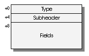 | 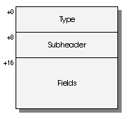 |
| (a) Object on a 32-bit address machine | (b) Object on a 64-bit address machine |
| Figure 1 | |
|---|---|
The memory allocator guarantees that all objects will be allocated on at least a word boundary. Furthermore, the memory allocator guarantees that any object whose size is a multiple of 8 will be allocated on a doubleword boundary.
An object's instance variables, if any, follow its header. The current implementation of Electrical Fire allocates the fields in the same order as they are presented in the Java source, with padding inserted as necessary to make sure that each field is aligned to a boundary that is a multiple of its size. Additional padding is inserted at the end of the object to make its size a multiple of 4 if the object does not have a doubleword in it or 8 if it does.
The sizes and alignments of the standard Java types are:
Java Type |
Size and alignment (bytes) |
|---|---|
boolean |
1 |
byte |
1 |
char |
2 |
short |
2 |
int |
4 |
long |
8 |
float |
4 |
double |
8 |
| object pointer | 4 or 8 |
Fields are placed at increasing byte addresses. The order of the bytes within a field (big or little-endian) is implementation-dependent.
When class B extends class A, class B's fields follow class A's fields. Any padding at the end of class A's instances is dropped. An example illustrates this and other instance layout rules.
Consider the following Java class declarations:
class A
{
Object a;
int b;
char c;
}
class B extends A
{
boolean d;
boolean e;
byte f;
short g;
float h;
double i;
int j;
}
class C extends B
{
byte k;
B l;
}
Instance objects of classes A, B, and C on a 32-bit address machine will be laid out as shown in Figure 2. Please note the following:
boolean fields are not bit-packed; they are allocated
one to a byte.
| 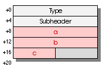 | 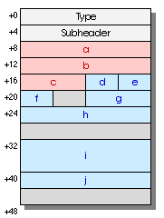 | 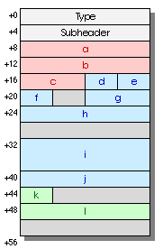 |
| Class A | Class B | Class C |
| Figure 2 | ||
|---|---|---|
On a 64-bit address machine, instance objects of classes A, B, and C will be laid out as shown in Figure 3.
| 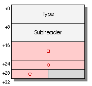 | 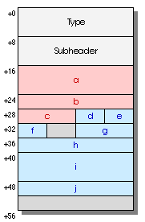 | 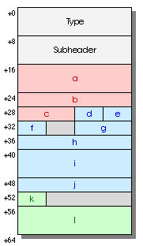 |
| Class A | Class B | Class C |
| Figure 3 | ||
|---|---|---|
In order to save space and improve cache locality we may wish to change our field allocation to use the first-fit strategy to place each field in an object. The field placement would be the same as above except that the fields would no longer be required to be in the same order as in the Java source file. Using this strategy on class C on a 32-bit address machine would yield the layout in Figure 4. Note that field j now fills the hole in front of field i, and field k fills the hole in front of field g.
| 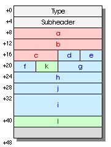 |
| Class C |
| Figure 4 |
|---|
An array is like an object with an extra word in the header and a variable
number of fields. Arrays have their own distinct types.
In an array the subheader is always followed by a length word that gives
the number of elements in the array, as returned by Java's length
expression.
The actual elements of the array follow the length word. There is an
extra word of padding between the length word and the first element of the
array if the elements of the array are each eight bytes wide (i.e. for arrays
of long or double on any machine or arrays of
pointers on a 64-bit machine).
The final element of the array is followed by enough padding so that:
long or double,
the gross size of the array is a multiple of 8;
The first condition above ensures that we can have a pointer just past the last element of the array without confusing the garbage collector.
Figure 5 shows the layout of arrays of five bytes,
five ints, and five longs on a 32-bit address
machine. Note the padding at the end of the array in each case.
| 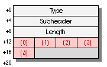 | 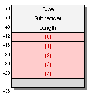 | 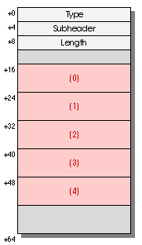 |
byte[5] |
int[5] |
long[5] |
| Figure 5 | ||
|---|---|---|
Figure 6 demonstrates the layout of arrays of
zero bytes and zero longs on a 32-bit address
machine. Note that, in the case of an array of zero longs,
we have one word of padding before the first element of the array (which
isn't there) as well as padding after the last element of the array. There
must be at least one byte of such padding, and, since the array is an array
of longs, there must be enough padding to bring the array up
to the next doubleword boundary, which in this case requires an additional
doubleword of padding.
| 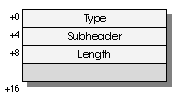 | 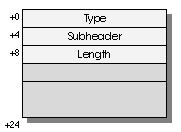 |
byte[0] |
long[0] |
| Figure 6 | |
|---|---|
Figure 7 shows the layout of arrays of five bytes,
five ints, and five longs on a 64-bit address
machine. Note the padding at the end of the array in each case. The arrays
of ints and longs would normally end on a doubleword
boundary, but we must insert an entire doubleword of padding at the end
so that there is at least one byte of padding after the last element.
| 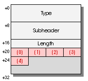 | 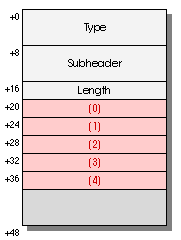 | 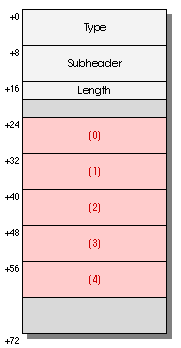 |
byte[5] |
int[5] |
long[5] |
| Figure 7 | ||
|---|---|---|